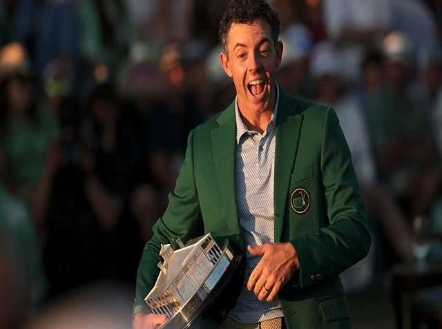
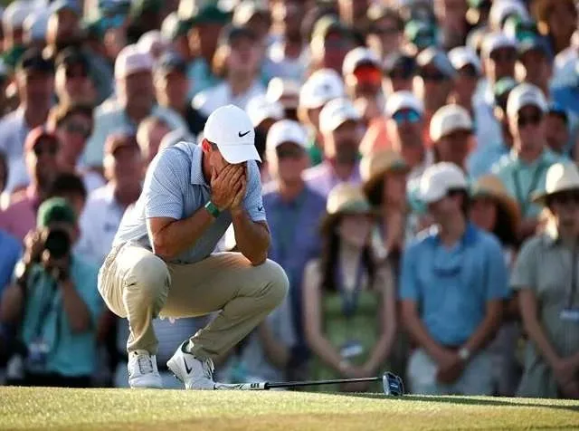
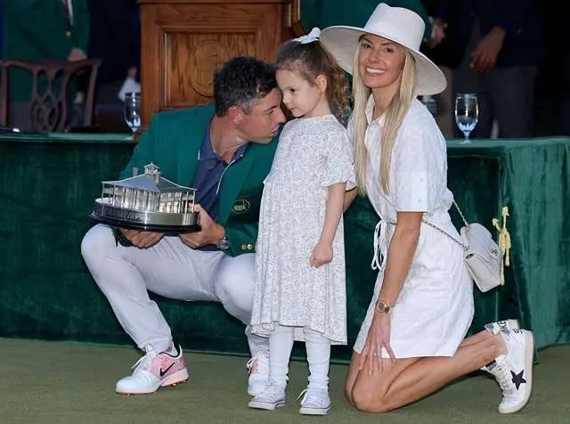

Jack Nicklaus, Nick Faldo, Tiger Woods, and most recently, Rory McIlroy.
In the 90th Masters Tournament on Sunday, the Northern Irishman emerged from a tight pack of contenders to triumph, becoming the only player in history to conquer Augusta National in back-to-back years. He joins the trio of golf icons.
McIlroy's victory marks his fourth consecutive victory at The Masters, joining Woods, Sir Nick Faldo, and Jack Nicklaus. Additionally, the 36-year-old is now the 15th individual in history to have won six or more major titles.
McIlroy's sixth career major also matched Faldo's record for the most by a European player in the modern era.
McIlroy expressed his amazement at receiving two green jackets in a row, stating, “I can’t believe that I waited 17 years to get one green jacket, and I get two in a row,” “I think that all of my perseverance at this golf tournament over the years has really started to pay off.”



Why This News Matters:
This win puts Rory McIlroy in a very small group of people. Winning the Masters two years in a row is very rare, and doing it after years of almost winning at Augusta makes it even more special. It's not just another trophy; it's proof that he's still one of the best players of his time, along with greats like Tiger Woods and Jack Nicklaus.
Dramatic Final Round and Leaderboard Battle
McIlroy expressed earlier this week that winning one Masters would facilitate the acquisition of a second. On Sunday, he drew upon this conviction to recover from a three-shot deficit on the front nine, resulting in a one-under-par round of 71 and a winning score of 12-under 276. This score was one better than that of Scottie Scheffler.
McIlroy and Cameron Young were tied for the 54-hole lead at 11 under as the final round commenced. Young, however, secured the outright advantage by birdieing the second hole.
McIlroy's repeated mission appeared to be in jeopardy when he went three over on the two par-threes on the front nine, resulting in a 9-under total for the tournament.
Rose achieved 12 under par by making four birdies in a five-hole span, and Scheffler and Henley also increased their chances of victory.
McIlroy established momentum and regained control by making birdies on the seventh and eighth holes, and subsequently added further gains at the 12th and 13th.
Key Moments and Closing Stretch
McIlroy persisted in increasing the pressure and established a two-shot lead through Amen Corner, while Scheffler's rally was impeded for an extended period by 11 consecutive pars.
Scheffler maintained his lead by making birdies on 15 and 16 to achieve 11 under, which established a tense conclusion.
McIlroy's drive into the pines on the 18th hole was aided by the two-shot cushion. He struck the ball forward, reached the greenside hazard, and then struck it onto the putting surface with his third shot.
McIlroy subsequently secured his victory by converting a two-putt bogey, becoming the fourth player in history to effectively defend at the Masters.
McIlroy expressed his satisfaction with the two-shot cushion, as opposed to the one he had last year.
Field Performances and Tournament Context
Scheffler secured the runner-up position by shooting a bogey-free 68, while Cameron Young, Russell Henley, Tyrrell Hatton, and Justin Rose came in close behind.
Hatton was positioned in a tightly crammed leaderboard alongside Rose, Young, and Henley as a result of his final-round 66.
McIlroy had established a Masters record with a six-shot lead after 36 holes; however, he played the final 36 holes at even par, which enabled numerous competitors to re-enter the competition.
“It was a tough weekend,” stated McIlroy. “I did the bulk of my work on Thursday and Friday, but just so happy to hang in there and get the job done.”
Legacy, Resilience and Career Milestone
McIlroy demonstrated his status as one of the game's greatest players by defeating the world's top players to become only the fourth individual to win consecutive Masters titles.
He had ended an 11-year wait to complete the career Grand Slam twelve months prior, a victory that he believed would enable him to perform with greater autonomy.
At the initial opportunity, he has been able to exhibit resilience and composure in the face of adversity.
"His capacity to remain patient and resolve the challenges he encountered was the determining factor in his inclusion in the Masters history, which also includes Nicklaus, Faldo, and Woods."
McIlroy stated, "I was determined to return and demonstrate that the previous year was not an anomaly."
What to Watch Next:
Now we need to think about what McIlroy will do next. Is it possible for him to keep this up and win even more majors? If he keeps winning, he could move up even higher among the all-time greats, which is a bigger question. And with Scottie Scheffler and other competitors right behind him, the competition at the top of golf isn't going to slow down anytime soon.